Visão Geral
Cloud Station para Synology NAS é uma aplicação de sincronização de ficheiros que lhe permite sincronizar facilmente ficheiros na sua Synology NAS com outros dispositivos, como computadores ou dispositivos móveis (com DS cloud). Instale o Cloud Station Server no seu Synology NAS e Cloud Station Drive no seu computador, para sincronizar automaticamente os ficheiros armazenados no seu computador com o seu Synology NAS.
Configurar a ligação entre o seu Synology NAS e o seu computador
- Aceda ao Centro de Pacotes, localize Cloud Station Server, e depois clique em Instalar.
- Inicie o Cloud Station Server.
- No separador Visão Geral, clique no botão em Cloud Station Drive para transferir Cloud Station Drive para o seu sistema operativo. (Também pode transferir a Cloud Station a partir do Centro de Transferências da Synology.) 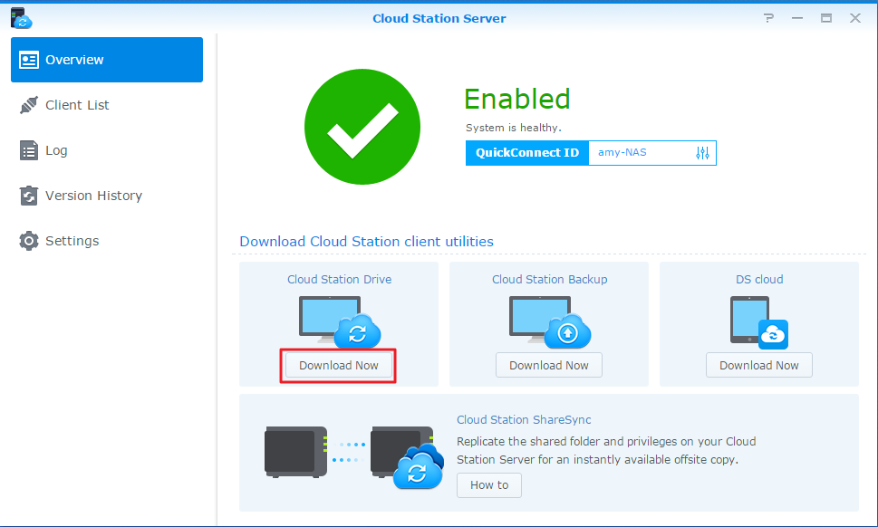
- Abra o instalador no seu computador e siga as instruções no ecrã.
- Depois da instalação, execute a Cloud Station no seu computador. Clique em Começar Agora. 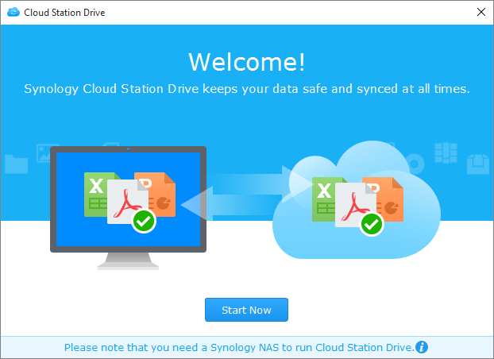
- Introduza o endereço do Synology NAS que executa a Cloud Station (ou QuickConnect ID), nome de utilizador e palavra-passe. Pode clicar no ícone de pesquisa à direita para pesquisar IPs dentro da sua LAN. Clique em Seguinte. 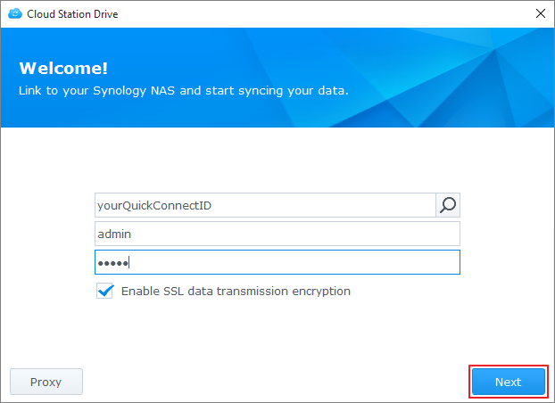
- Selecione as pastas que deseja sincronizadas no seu Synology NAS e no seu computador, clicando nos ícones Editar. Pode depois clicar em Avançado para configurar as definições de sincronização
- Desmarque as pastas que não deseja sincronizadas. 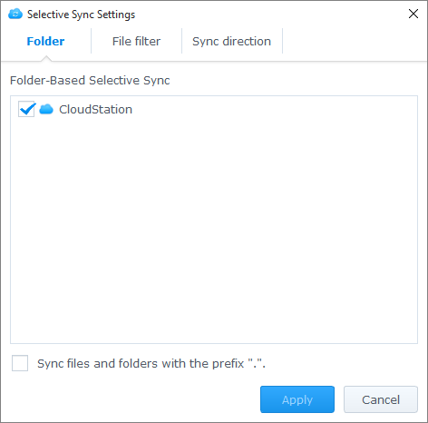
- Configure um tamanho máximo de ficheiro ou nomes de ficheiros da lista excluída, ou tipos de ficheiro a não sincronizar. 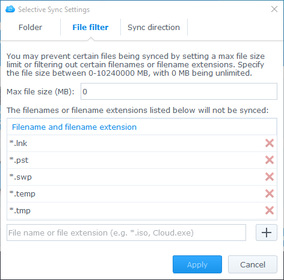
- Selecione entre sincronizar bidirecionalmente ou apenas transferir do seu Synology NAS. 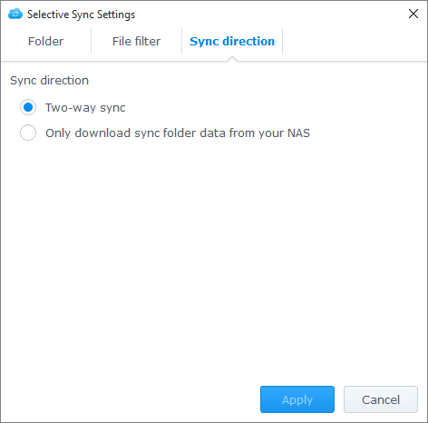
- Clique em Concluído para concluir a configuração. 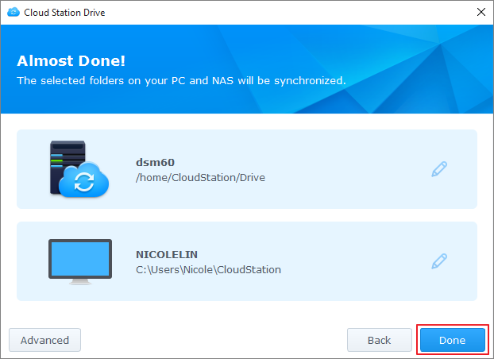
- Pode encontrar o ícone da Cloud Station o tabuleiro de sistema. 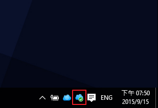
- Clique no ícone do tabuleiro de sistema para abrir o menu do tabuleiro. Aqui pode ver o progresso e estado dos seus ficheiros. Aqui pode ver o progresso e estado dos seus ficheiros. Clique em Aplicação principal para abrir a Cloud Station. 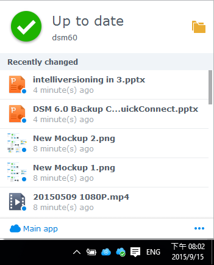
- Depois da abertura ser-lhe-ão mostradas algumas sugestões sobre como usar a Cloud Station. Clique na seta para a direita para ver mais sugestões, ou clique em Tutoriais online para mais informações. Caso não precise das sugestões, assinale a caixa junto de Não mostrar novamente. 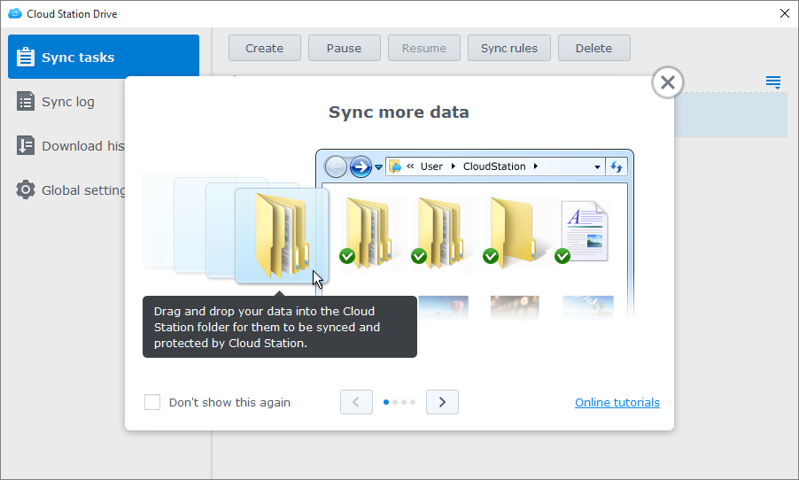
- Agora pode gerir as suas tarefas de sincronização na Cloud Station Drive. 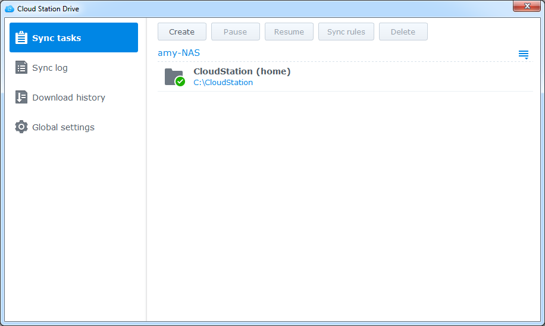
Transferir uma versão anterior de um ficheiro sincronizado
- Clique no ícone da Cloud Station Drive no seu tabuleiro de sistema e clique no ícone da pasta. 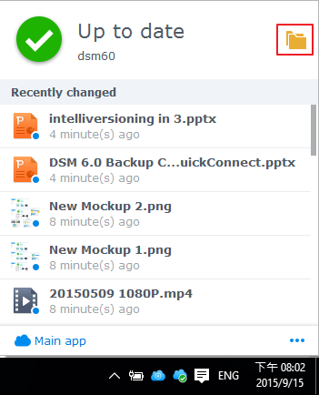
- Clique com o botão direito do rato no ficheiro selecionado e escolha Synology Cloud Station > Pesquisar versões anteriores.
- Localize a versão que pretende transferir e clique no ícone de transferência. 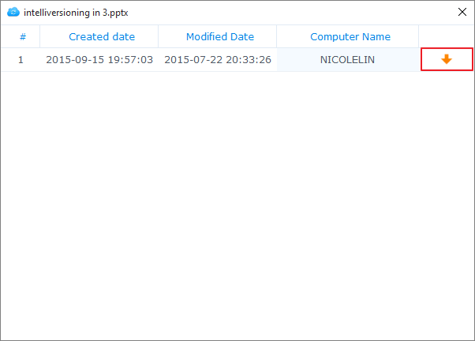

Transferir ou restaurar uma versão anterior de um ficheiro sincronizado na Cloud Station Server
- Aceda a Cloud Station Server > Histórico de Versões e localize o ficheiro ou pasta que deseja restaurar. 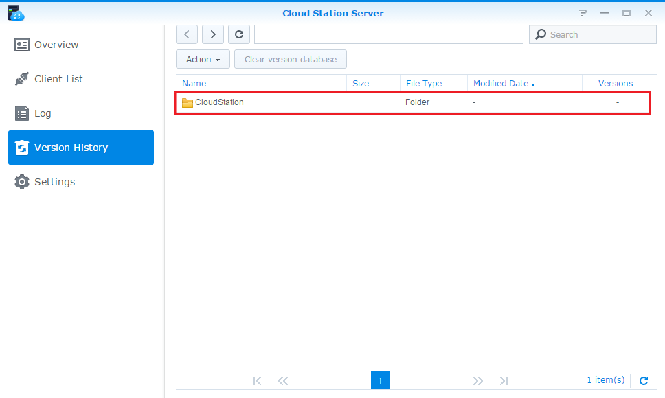
- Selecione o ficheiro que pretende recuperar e clique em Ação > Percorrer versões anteriores.
- Selecione a versão do ficheiro que pretende transferir e clique em Transferir. Ou, se tiver a certeza de que pretende a versão a selecionada restaurada, clique em Restaurar e irá sobrepor a sua versão atual. 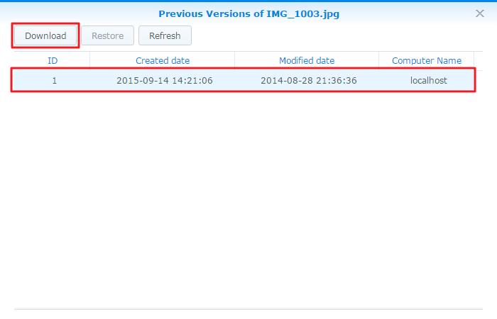

Notas importantes
- Mantenha sempre o histórico das versões, para a eventualidade de um ficheiro ser removido ou sobreposto por acidente.
- Nas Definições Globais, pode configurar se um ficheiro removido do seu PC será rebuscado do seu NAS ou apagado no seu NAS quando tem lugar a nova ligação
- Não copie manualmente os ficheiros do PC para NAS e vice-versa. Para que a sincronização de dados subsequente seja eficiente, Cloud Station tem de analisar cada ficheiro sincronizado para ver as alterações. Por isso, poderá demorar bastante mais tempo a concluir a sincronização inicial. O tempo gasto depende da quantidade de ficheiros e desempenho do NAS e PC/Mac. Se estiver interessado em saber como funciona a Cloud Station, consulte o nosso White Paper aqui.
Sincronizar Dados para os seus Dispositivos Móveis
DS cloud está disponível de forma gratuita na App Store da Apple e Loja Google Play. Pode também digitalizar o código QR abaixo para transferir directamente.
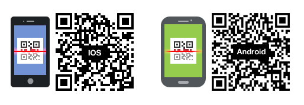